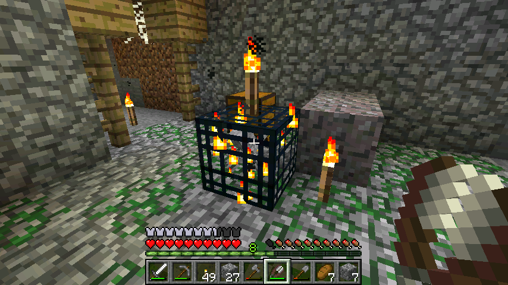
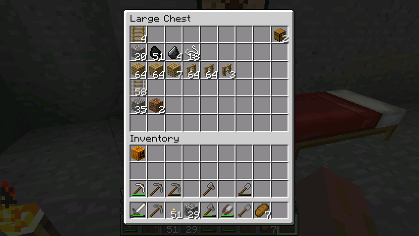
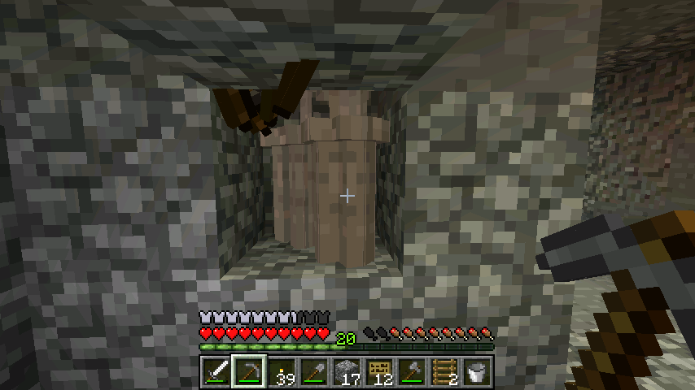
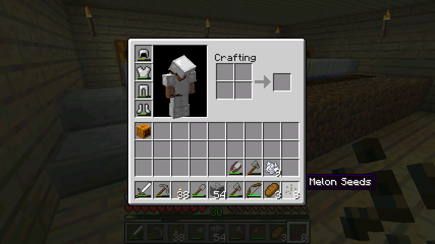

首页
上一页
8
9
10
11
12
13
13
14
15
16
17
18
下一页
末页
defanive2
无尽黑夜
14
结果准备完就快天黑了，于是先睡觉。。
you can only have sex at night x99999
478楼
2012-08-06 20:54
defanive2
无尽黑夜
14
最大的失误。。忘记带剪刀了
479楼
2012-08-06 20:56
defanive2
无尽黑夜
14
于是我决定，回家拿剪刀。。
480楼
2012-08-06 21:03
defanive2
无尽黑夜
14
带上剪刀出发去矿洞
481楼
2012-08-06 21:04
defanive2
无尽黑夜
14
开始清理，还是挺耗时间的
这个时候开始后悔为什么不给斧子和稿子附魔个效率1？反正我等级多。。
482楼
2012-08-06 21:18
defanive2
无尽黑夜
14
再近看一家发现的骷髅刷怪笼
实在是觉得RP爆发了，从此骨头和箭都没有鸭梨了
不过还是要造好才行

483楼
2012-08-06 21:26
defanive2
无尽黑夜
14
简单的工作空间
485楼
2012-08-06 21:36
defanive2
无尽黑夜
14
只清理了几个支路，资源就有这么多了
可见一个废弃矿洞是很不错的资源地
当然你也要有足够的耐心进行清理和探索
危险性也是很大的，不过相对天然洞穴，回报要高很多

486楼
2012-08-06 21:38
defanive2
无尽黑夜
14
发现了未探索的一部分
487楼
2012-08-06 21:42
defanive2
无尽黑夜
14
突然发现还有一条路没走
488楼
2012-08-06 22:22
defanive2
无尽黑夜
14
清理工作还有很多没做完，不过我也玩的没耐心了
估计大家看得就更加没耐心了
准备收工回家，然后一会过来建经验塔
503楼
2012-08-06 22:35
defanive2
无尽黑夜
14
用一个珍贵的史莱姆球，合成一个粘性活塞
带上大约30个牌子，准备出发造骷髅经验+资源塔
504楼
2012-08-06 23:02
defanive2
无尽黑夜
14
附魔两个石稿，准备出发
505楼
2012-08-06 23:04
defanive2
无尽黑夜
14
网速终于好了，继续直播
506楼
2012-08-07 00:20
defanive2
无尽黑夜
14
跟僵尸塔一样的结构，9x9x3
不过还有一层需要挖
507楼
2012-08-07 00:27
defanive2
无尽黑夜
14
水电梯也是一样做，不过这次做24格高，因为这刚好是骷髅摔死的高度
然后通过一个活塞控制掉落高度是23还是24
23的时候就是经验塔，空手一击必杀
24就是资源塔，掉下来直接死，收集掉落
508楼
2012-08-07 00:29
defanive2
无尽黑夜
14
不过这次刚好最后一个牌子是在顶端，所以导致了设计上有点问题
修改了几次，决定加高一格到25格，然后加一个楼梯作为高度重设
509楼
2012-08-07 00:31
defanive2
无尽黑夜
14
最后修改多次之后就是这样
虽然这个平台是在25格，但是骷髅下了一格楼梯才开始掉落，也就是24格
水流就是从右往左冲，不过要保证楼梯这格没有水
否则骷髅可以一直往上游不摔落
510楼
2012-08-07 00:33
defanive2
无尽黑夜
14
放置好活塞之后，现在是24格，骷髅落下就死，直接收集资源
511楼
2012-08-07 00:35
defanive2
无尽黑夜
14
活塞上推之后，23格摔落高度
此时骷髅剩半格学，一击必杀，可以刷经验
512楼
2012-08-07 00:37
defanive2
无尽黑夜
14

嗯很不错
513楼
2012-08-07 00:38
defanive2
无尽黑夜
14
RP好爆出了一个弓
514楼
2012-08-07 00:39
defanive2
无尽黑夜
14
回家，繁殖一下绵羊
打算把各种颜色的羊毛都收集齐全
515楼
2012-08-07 00:55
defanive2
无尽黑夜
14
现在做什么呢？呃呃呃
先升到LV30把，虽然不知道应该附魔什么了，不过还是先升了再说
附魔有什么比较好的呢
稿子有silk touch和fortune，fortune已经有了，silk touch难度挺高，
剑的话有looting
弓infinite现在意义也不大了，有了骷髅刷怪塔之后弓箭也算是无限了
头盔respiration
鞋子的话feather falling
看起来都不错，我来查一下附魔概率
517楼
2012-08-07 01:18
defanive2
无尽黑夜
14
弓的infinity是24%
稿子的silk touch是15%
剑的looting是18%
鞋子的feather falling在LV25是几率最大，在66%左右
头盔的respiration是46%左右
按照几率的话，应该是附魔鞋子，不过感觉没什么兴趣，暂时用不到
而looting的吸引力很大
我就附魔钻石剑吧
518楼
2012-08-07 01:28
defanive2
无尽黑夜
14
不知道是设计问题还是RP问题，感觉骷髅刷怪笼的出怪速度相比僵尸要慢很多
刷经验也比较慢
也算是僵尸刷怪笼的一个优势吧
519楼
2012-08-07 01:30
defanive2
无尽黑夜
14
这个真是神RP，这样都能射一箭。。
看起来也貌似是BUG把
不过对于物理模拟的游戏也不能强求完美
520楼
2012-08-07 01:33
defanive2
无尽黑夜
14
得到了一把附魔的弓箭，力量1
骷髅出的附魔弓都是这个
话说用1级附魔弓会出什么呢？不会就是力量1吧。。
521楼
2012-08-07 01:37
defanive2
无尽黑夜
14
LV30！
回家附魔钻石剑
522楼
2012-08-07 01:40
defanive2
无尽黑夜
14
话说拿了西瓜籽这么久都不记得种西瓜，实在是佩服自己的记忆力
如果种了的话现在已经可以收成了

523楼
2012-08-07 01:43
首页
上一页
8
9
10
11
12
13
13
14
15
16
17
18
下一页
末页